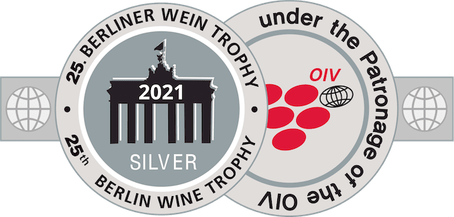
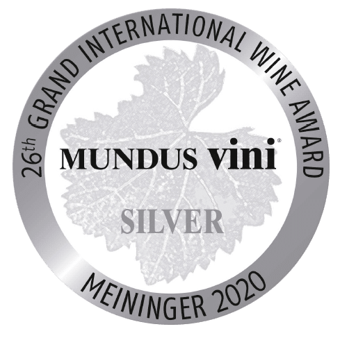
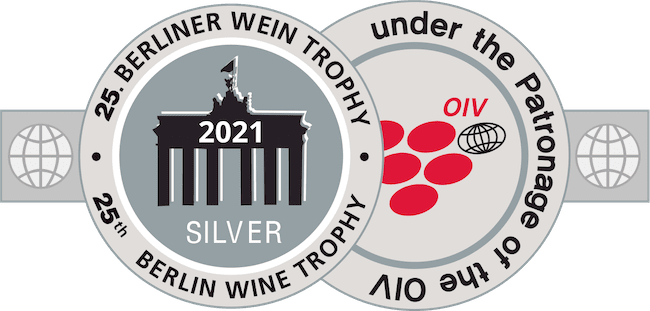
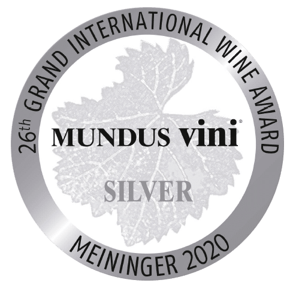
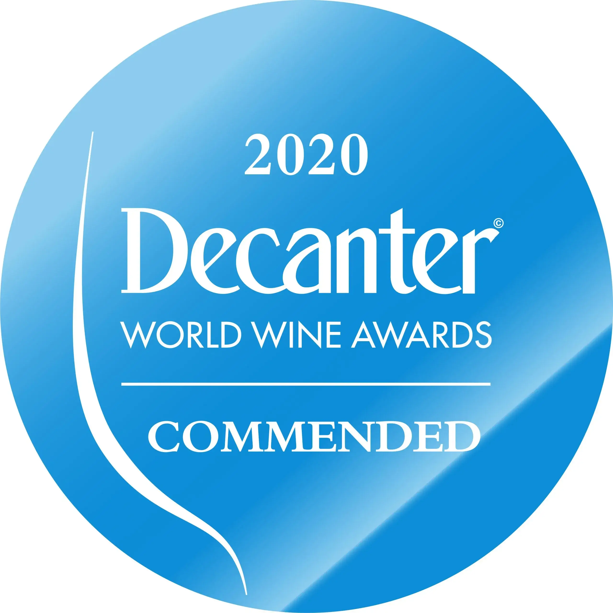
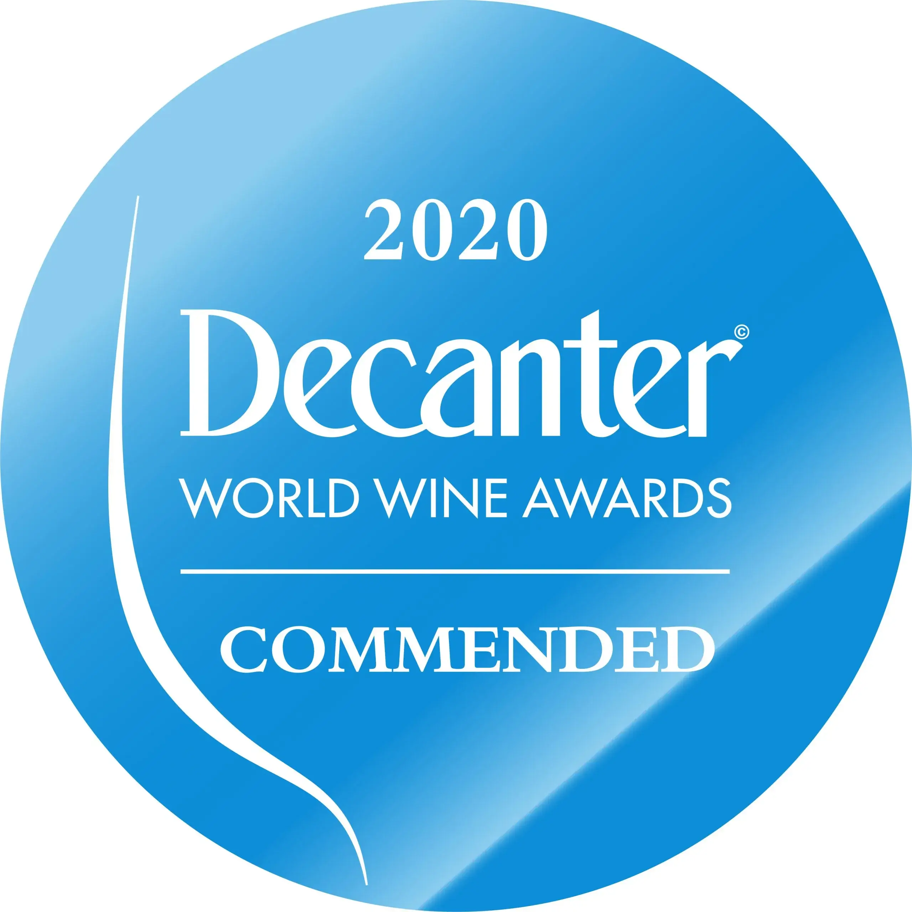

PRODUS LOCAL APRECIAT MONDIAL
PRODUS LOCAL APRECIAT MONDIAL


Cel mai modern complex tehnologic pentru prelucrarea strugurilor și mustului de struguri, vă permite să păstrați și să transferați vinului toate substanțele utile, vitaminele din struguri, precum și puterea organică specială depusă de natură în sol
Compania noastră monitorizează îndeaproape schimbările în condițiile pieței. Fiecare produs are un preț ferm onest, confirmat de calitate și tehnologie înaltă
Majoritatea vinurilor sunt îmbuteliate în sticle exclusive de design excelent, iar politica comercială se concentrează pe cererile oricărui client, până la posibilitatea emiterii unui sortiment de autor cu executarea comenzii în termen de 25 de zile


Director
Experiență profesională de 50 de ani

Director executiv Suvorov-Vin
Experiență profesională 12 de ani
Director executiv Kazayak-Vin
Experiență profesională 24 de ani
Sef departament vanzari
Experiență profesională de 16 ani

Inginer de proces
Experiență profesională 25 de ani
Compania noastra are mai mult de 300 de angajati orientați la crearea produselor de vin de primă clasă. În fiecare zi, fiecare dintre noi contribuie integral la dezvoltarea întreprinderii. Suntem un întreg, care este ținut împreună, datorită unității de gândire, unitatea de idei și de iubire fără margini pentru producerea vinului

Vinificator Suvorov-Vin
Experiență profesională 46 de ani
Cel mai bun vinificator al Republicii Moldova 2019


Vinificator Kazayak-Vin
Experiență profesională 26 de ani
Cel mai bun vinificator al Republicii Moldova 2020
«Un vin bun este ca un film bun: durează o clipă și îți lasă un post gust de neuitat» Deci vinificatorii noștri, în calitate de regizori cei mai iscusiți și experimentați, de la an la an, lucrează pentru a-și crea cea mai bună creație. Și savurăm fotografiile și ne bucurăm de notele minunatei lucrări și dorim pentru data viitoare, Creatorul nostru va primi un alt trofeu - Medalia de Aur!

 





 
